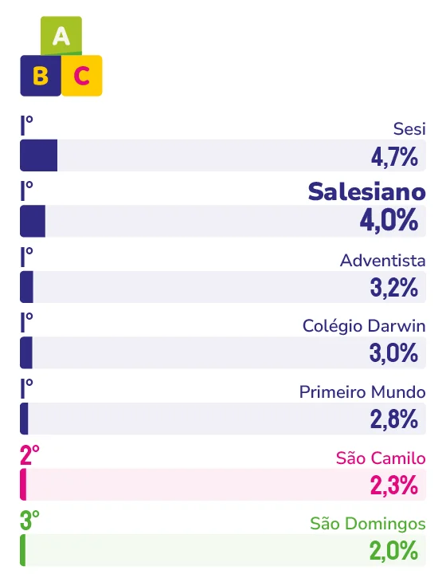

INSTITUIÇÃO DE ENSINO INFANTIL PARTICULAR
COLÉGIO SALESIANO
Fundada em 1943, Colégio Salesiano une o Sistema Preventivo de Dom Bosco a ferramentas como inteligência artificial e gamificação para se manter relevante entre gerações de capixabas.
Há famílias capixabas em que avós, pais e filhos passaram pelos mesmos corredores escolares. Algumas, inclusive, fizeram o trajeto completo, da educação infantil ao ensino médio, dentro da mesma instituição. Para o diretor institucional do Colégio Salesiano Vitória, Pe. Marcelo Vicente de Paula, esse tipo de vínculo é o que sustenta o reconhecimento da escola entre as famílias da Grande Vitória, em diferentes etapas da formação dos filhos.
“Quando uma marca atravessa décadas educando avós, pais e netos de uma mesma família, ela deixa de ser apenas uma escola e se torna uma instituição de confiança geracional”, afirma o padre. Essa trajetória começou em 1943, quando a primeira unidade foi fundada no Parque Moscoso, antes de migrar para a sede no Forte São João, com vista para a Baía de Vitória. “A presença dos salesianos em Vitória e no interior do estado vai além do papel de prestadora de serviços educacionais; ela atua como um patrimônio cultural, identitário e comunitário”, descreve.
Esse reconhecimento ganhou um capítulo mais recente em 2023, com o lançamento da educação infantil, o segmento mais novo da instituição. “Sem dúvida, o grande momento de virada foi o próprio lançamento da educação infantil, em 2023. Foi um projeto estruturado com muito planejamento e clareza de propósitos”, relembra Pe. Marcelo. Segundo ele, a novidade completou um ciclo importante para as famílias capixabas. “Nos permitiu completar toda a jornada escolar da presença salesiana em Vitória, garantindo que asa famílias possam contar com a nossa excelência desde os primeiros passos da criança até o ensino superior, com o Centro Universitário.”
Apesar da diferença de idade entre os segmentos, a base pedagógica é a mesma em toda a instituição. “O que nos diferencia é a aplicação prática do Sistema Preventivo de Dom Bosco – alicerçado na razão, na religião e no amor (amorevolezza) – em total harmonia com a inovadora pedagogia de Reggio Emilia”, explica o diretor institucional. Essa base, segundo ele, convive de forma natural com ferramentas contemporâneas, e inteligência artificial aplicada à redação, gamificação da matemática, programas bilíngues e estruturas maker fazem parte do dia a dia das unidades.
Pe. Marcelo também observa uma mudança no comportamento das famílias que ajuda a explicar essa permanência na memória dos capixabas. “Hoje as famílias buscam um ambiente acolhedor com atendimento personalizado porque valorizam saber que seus filhos são conhecidos pelo nome, acolhidos e acompanhados de perto em suas individualidades”, diz. Ao mesmo tempo, a tecnologia entra como tema de formação ética, não apenas como ferramenta. “Discute-se o impacto da inteligência artificial na sociedade, os limites do cyberbullying e a importância da presença consciente no ambiente digital.”
Para os próximos anos, a instituição projeta plataformas de aprendizagem adaptativa, um projeto de reforma arquitetônica assinado por um escritório de São Paulo e o lançamento do Observatório de Projetos Salê Sustentável. Mas, segundo o padre, o que sustenta tudo isso permanece o mesmo de sempre: “o que não pode mudar são os valores da identidade e da tradição salesiana, o acolhimento humano e a valorização da subjetividade do aluno.”

Pe. Marcelo Vicente de Paula
Diretor institucional do Colégio Salesiano Vitória
“Os pais percebem que a escola católica consegue equilibrar o afeto e o acolhimento com a exigência acadêmica e a disciplina necessárias para o futuro profissional. Na rede salesiana de educação, esses valores dialogam com as inovações tecnológicas: discute-se o impacto da inteligência artificial na sociedade, os limites do cyberbullying e a importância da presença consciente no ambiente digital.”
91
